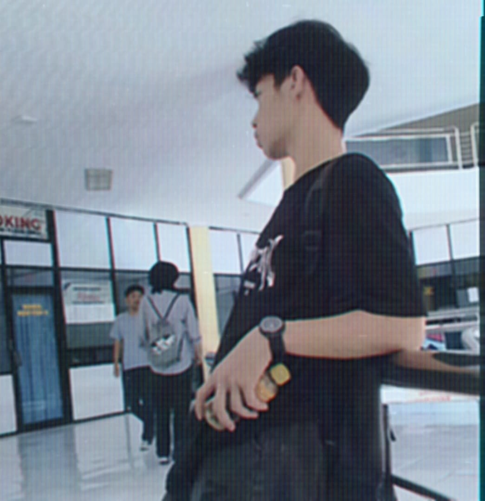

Junior Web Developer | Multimedia Editing | Administrasi & Pengelolaan Data
Hubungi Saya
Saya Yunus Pabetteng, lulusan S1 Teknik Informatika, dengan minat dan pengalaman di bidang IT Support, pengembangan website, desain grafis, serta administrasi dan pengelolaan data. Selama kuliah, saya aktif mengerjakan proyek website, desain grafis untuk sablon kaos, dan proyek IoT sederhana seperti alat pendeteksi kematangan buah pisang serta sistem lampu lalu lintas mini.
Pengalaman praktik saya meliputi magang di Kantor Regional IV BKN Makassar, KKL di BPPKS Makassar, dan program mengajar selama satu bulan di SMP Kristen 1 Tagari. Saya terbiasa melakukan troubleshooting perangkat komputer, instalasi software, pengolahan dan pencatatan data, pembuatan laporan, serta pemanfaatan alat digital untuk meningkatkan efisiensi kerja.
Saya adalah pribadi yang cepat belajar, teliti, adaptif, dan disiplin, siap berkontribusi untuk mendukung operasional perusahaan, khususnya di lingkungan industri atau pertambangan, dengan kemampuan teknis dan administrasi yang solid.
Siap berkontribusi dan terus berkembang. Ingin tahu lebih lanjut? Jangan ragu untuk menghubungi saya.